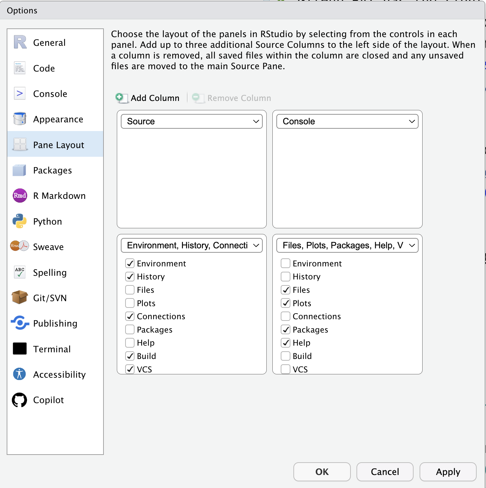
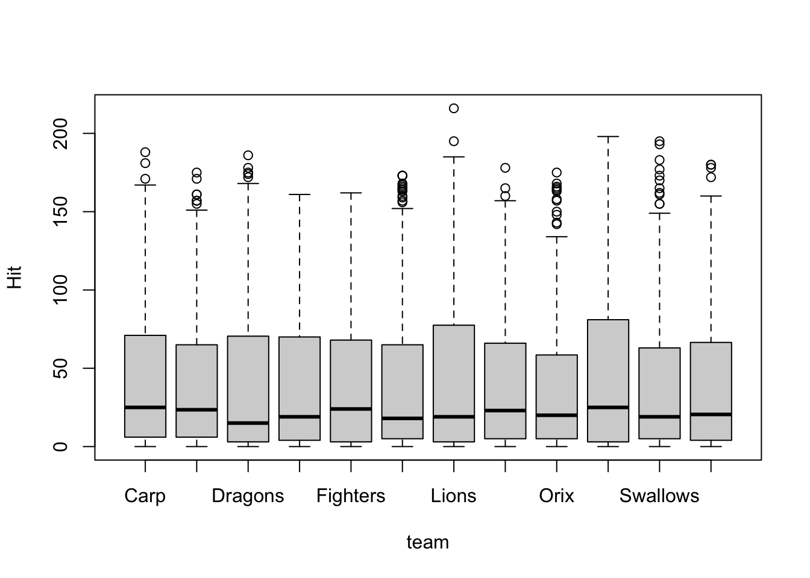

rm(list = ls())2 Rとexametrikaパッケージの導入
2.1 自己紹介
- 小杉考司（こすぎこうじ）
- 専修大学人間科学部 教授 博士（社会学）
- 担当講義；心理学データ解析基礎，心理学データ解析応用
- 専門分野
- 心理尺度の作り方，使い方
- 多変量解析（因子分析，多次元尺度構成法），統計モデリング
- 統計パッケージ開発；exametrika
- 関わった書籍
2.2 Rの紹介
- R言語はオープンソースの統計解析環境
- 豊富な統計手法とグラフィックス機能
- 無料で利用可能で継続的に発展中
- 拡張パッケージが充実（CRAN, Bioconductor等）
- データサイエンス・統計分析の標準ツールの一つ
- RStudioはRをより使いやすくする統合開発環境（IDE）
- コード編集、実行、可視化が一画面で完結
- プロジェクト管理機能で作業を整理
- Rmarkdown/Quartoによる再現可能な分析レポート作成

2.3 Rのはじめかた
0. SPSSやSASなどの統計ソフトをアンインストールします
CRAN（しーらん）と検索します。The Comprehensive R Archive Networkというサイトが出てくるはずです。- 自分のOS/CPUに合ったページから，最新版をダウンロードします。現在はR4.4.3になります(2025-02-28update!)。
- 指示に従ってインストール！「次へ」を連打するだけでいいです。簡単ですね！

2.3.1 RStudioも使いましょう
RStudioで検索します。RStudio DesktopあるいはPosit社が出てきます。Install RStudioからRStudio Desktopをダウンロードしてインストールしましょう。
RStudioはServer版もあります。サーバを用意すればブラウザ経由で簡単に使える利点があります。

2.3.2 RStudioの起動画面

- 大きく4分割して使います。
- 起動して最初にやるのが「環境設定」です。
- メニューバーから，Tools > Global Optionsと進みます。
2.3.3 オススメ設定
- General > Basic のWrokspace，
Save Workspace to .RData on exit:をneverに - General > Graphics > Graphics Deviceの
BackendをAGGに - Appearance の
Editor Fontを見やすいフォントにしましょう - Appearance の
Editor Font sizeを見やすい大きさにしましょう
おすすめフォント
2.3.4 オススメ設定(つづき)

- Pane Layoutを
- SourceとCosoleを横並びに
- かなりワイドな画面をお使いの方は，
Add Columnで3列にしてsource paneを一列増やそう
- 設定が終わったら Apply(適用) ボタンをおして，OK で閉じる
2.3.5 RStudioの4つの窓
Sourceペインはエディタ領域で，Rスクリプトを書く場所。ConsoleペインはRエンジン。直接Rコードを書いてもいいし，Sourceから一行ずつ，あるいはSource全体を流し込んで計算を実行する。
2.3.6 RStudioの4つの窓
Environmentはメモリに入っている変数・オブジェクトを表示Filesはワーキングディレクトリの表示，簡単な操作Packageはパッケージ管理(後述)Plots,Viewerは出力表示
2.3.7 Rはプロジェクト管理が基本
- プロジェクト＝フォルダに紐づいた作業環境を作ろう
- File > New ProjectからNew Directory/Existing Directory/Version Controlを選ぶ
- New Directory; 新しいフォルダで作業開始
- Existing Directory; 既存のフォルダをプロジェクトと紐付け
- Version Control; Githubレポジトリとプロジェクトを紐付け
- File > New ProjectからNew Directory/Existing Directory/Version Controlを選ぶ
プロジェクトにしておくと，作業フォルダの設定も自動でなされるから，ファイルの読み込みなどでパスの指定が楽になります。
- 今回の春セミ用にプロジェクトフォルダを作りましょう！
- すでにフォルダに色々まとめている人は，Existing Directoryから
- まだフォルダがない人は，New Directoryから
2.4 Rをさわってみましょう
2.4.1 はじめの1歩
- Rはインタプリタ言語＝一問一答
- Consoleに
>が出ていたら聞く準備ができています。 - Consoleに
+が出ていたら前の入力が終わってません。
- Consoleに
- 直接Consoleに書き込むのではなく，スクリプトに書きましょう。
- File > New File > R Script と進むと無名のスクリプトファイルが開きます
- スクリプトファイルが開いたら，まず次のように書きます。
- 一行目は呪文のようなものだと思ってください。
rmという関数はremoveを意味していて，現在Rのメモリにある変数やオブジェクトを除外します。list=ls()は「メモリのすべてのオブジェクトリスト」を意味するので，これで環境の初期化になります。
2.4.2 パッケージ
- パッケージは関数のセット。元のRに追加するだけで機能が増えます。
- パッケージはCRANを通じて公開され，ペインの
Packagesタブで管理できます。

- デフォルトではCRANから取ってくることになります。(要ネット環境)
- Packagesのところで
exametrikaと入力してインストールしちゃいましょう。 - あるパッケージが他のパッケージを必要とすることもあります。これを依存パッケージといいます。
- RStudioのPackagesタブでは
install dependenciesにチェックがあるのがデフォルトです。- 依存パッケージがあれば自動的にインストールされます。
exametrikaはigraphなどに依存していますので，それらが同時に導入されます
- Packagesのところで
2.4.3 パッケージの使い方
- パッケージを使うには
libraryと書きます。
library(exametrika)Loading required package: mvtnormLoading required package: igraph
Attaching package: 'igraph'The following objects are masked from 'package:stats':
decompose, spectrumThe following object is masked from 'package:base':
unionこれで
exametrikaパッケージの持つ関数が実行できるようになりました！他のパッケージも同様です。パッケージのインストールを毎回する必要はありません。インストールは「手に入れる」ということだからです。
パッケージの実装(
library)はセッション毎に行う必要があります。これは「そうびする」ようなものです。Rスクリプトの冒頭で
rm(list=ls())としましたが，分析に必要なパッケージはスクリプトの最上部にまとめて書いておきましょう。- Rはインタプリタなので，逐次的に処理が進みますが，行ったり来たりしていると「パッケージを読み込んだっけ？」とか「今は何の数字で何の計算をしてるんだっけ？」となってしまいます。
- 細かいことですが，パッケージは読み込む順番に影響されることがあります。
- 同じ関数名を異なるパッケージが使っている場合，後で読み込まれた方が上書きされます。
- 混同しないように
PackageName::functionのように::で明示することがあります。
2.4.4 数値計算の基礎
- スクリプトに四則演算を書いて，Cmd+Enterでコンソールに送ります。
- 複数行選択/Runボタン/Sourceボタンをつかってもいいでしょう。
1 + 2[1] 33 - 4[1] -15 * 6[1] 307 / 3[1] 2.333333- 出力に
[1]とあるのは気にしないでください。- Rはベクトルで処理します。今回の演算も，要素が1つのベクトルとして考えて処理しています。
2.4.5 数値計算の基礎
- 計算結果を保持する，あるいは名前をつけて管理することができます。
- Rは「名前をつけて管理する対象」をすべてオブジェクトといいます。
a <- 1 + 2
b <- 3 - 4
print(a)[1] 3print(b)[1] -1print(a + b)[1] 2<-で代入を意味します。ショートカット(ALTと-,optionと-)も覚えておこう- RStudioの
Environmentタブに保存されているオブジェクトが表示されています。ダブルクリックで確認できます。
a <- 5
a + b[1] 4同じオブジェクト名なら上書きされることに注意
2.4.6 ベクトル，行列，リスト，データフレーム
- 複数の数字のセット，ベクトルは
c()でくくることで表現します。- 連続した数字はコロン
:で表現します。
- 連続した数字はコロン
- 2次元に並ぶ数字のセット，行列は
matrix()でつくります。matrix関数にベクトルを与えるなどします。
- 3次元以上の数字のセット，配列は
array()で，dimオプションで各次元の大きさを指定します。 - 数字，文字，論理値(T/F)などが混在するもののセット，リストは
list()でつくります。 - リストの中でも矩形に整っているデータフレームは，
data.frame()でつくります。
分析するときはデータフレームがもっともよく使われます
データフレームの上位互換，tibbleという型もあります。これはtibbleパッケージを読み込むことで使えるようになります。
2.4.7 ベクトル（Vector）の例
2.4.7.1 数値ベクトル
x <- c(1, 2, 3, 4, 5)
print(x)[1] 1 2 3 4 52.4.7.2 文字列ベクトル
y <- c("りんご", "みかん", "バナナ")
print(y)[1] "りんご" "みかん" "バナナ"2.4.7.3 論理値ベクトル
- Rには文字，数字以外に論理値というのがあります。真/TRUEか偽/FALSEか，を表します。
- 使い方としては，論理判断の条件で使ったり，オプションの「スイッチオン・オフ」を表す時につかいます。
- 大文字の
TやFは論理値を表す特別な用語(予約語)です。
z <- c(TRUE, FALSE, TRUE)
print(z)[1] TRUE FALSE TRUE2.4.8 行列（Matrix）
- 1から9までの数字で3×3行列を作成
m1 <- matrix(1:9, nrow = 3, ncol = 3)
print(m1) [,1] [,2] [,3]
[1,] 1 4 7
[2,] 2 5 8
[3,] 3 6 9- 行名と列名を付ける
m2 <- matrix(1:9,
nrow = 3, ncol = 3,
dimnames = list(
c("A", "B", "C"),
c("X", "Y", "Z")
)
)
print(m2) X Y Z
A 1 4 7
B 2 5 8
C 3 6 92.4.9 配列（Array）
- 2×3×2の3次元配列を作成
arr <- array(1:12, dim = c(2, 3, 2))
print(arr), , 1
[,1] [,2] [,3]
[1,] 1 3 5
[2,] 2 4 6
, , 2
[,1] [,2] [,3]
[1,] 7 9 11
[2,] 8 10 122.4.10 リスト（List）
- 様々な型のデータを含むリストを作成
my_list <- list(
numbers = c(1, 2, 3),
text = "Hello",
logical = TRUE,
matrix = matrix(1:4, 2, 2)
)
print(my_list)$numbers
[1] 1 2 3
$text
[1] "Hello"
$logical
[1] TRUE
$matrix
[,1] [,2]
[1,] 1 3
[2,] 2 42.4.11 リスト（List）
- リストの要素へのアクセス
- 名前付きリストなら
$マークで呼び出せます
- 名前付きリストなら
my_list$numbers[1] 1 2 3my_list$numbers[3][1] 3my_list$matrix[, 2][1] 3 4my_list$matrix [,1] [,2]
[1,] 1 3
[2,] 2 42.4.12 データフレーム（Data Frame）
- データフレームの作成例
- データフレームはリストの特殊な型なので，リストを
as.data.frame関数で変換してもOK
- データフレームはリストの特殊な型なので，リストを
df <- data.frame(
name = c("田中", "鈴木", "佐藤"),
age = c(25, 30, 28),
gender = c("M", "F", "M"),
height = c(170, 160, 175)
)
print(df) name age gender height
1 田中 25 M 170
2 鈴木 30 F 160
3 佐藤 28 M 175- 要素へのアクセスの仕方はリストと同じです
df$age[1] 25 30 282.4.13 データ構造の比較
| 特徴 | ベクトル | 行列 | 配列 | リスト | df | Tibble |
|---|---|---|---|---|---|---|
| 次元 | 1次元 | 2次元 | n次元 | 階層構造 | 2次元 | 2次元 |
| 型の統一 | 必要 | 必要 | 必要 | 不要 | 列ごと | 列ごと |
| データ型 | 単一 | 単一 | 単一 | 複数可 | 複数可 | 複数可 |
| 主な用途 | 単純な数列 | 数値計算 | 多次元データ | 複雑なデータ | データ分析 | データ分析 |
tibble型はデータフレームの上位互換で，tibbleパッケージを使うことで導入できます。主な特徴は次のとおりです。
- 型情報の表示
- 行数と列数の表示
- データの一部のみ表示（大きなデータセット時に便利）
2.4.14 パイプ演算子を活用しよう
- パイプ演算子は、データの処理を順番に繋げてくれる記号
- 左から右へ、データが流れていくイメージ！コードが読みやすく、理解しやすくなる
2.4.14.1 基本的な使い方
- パイプ演算子を使わないでいると？
result <- sum(sqrt(abs(log(c(1:10)))))- パイプ演算子を使ってみると？
result <- c(1:10) |>
log() |>
abs() |>
sqrt() |>
sum()- パイプ演算子はショートカット
Ctrl/Cmd + Shift + Mで入力できます|>はR4.1以降使えるようになった，Rのもってるパイプ演算子%>%はmagrittrパッケージや，それを含んだtidyverseパッケージで以前から使われていたもの
2.4.15 (余談)tidyな世界
tidyverseパッケージは，データハンドリングを画期的に簡単にしたパッケージで，これでRのユーザが一気に広がったと言っても過言ではありません。tidyverseパッケージはパッケージのパッケージ。- 大規模データ用のデータフレーム，
tibble - パイプ演算子のパッケージ
magrittr - 描画を綺麗にしてくれるパッケージ
ggplot2などが含まれます
- 大規模データ用のデータフレーム，
- 専門の書籍も出ています
tidyverseパッケージを基本にした改訂2版RユーザのためのRStudio[実践]入門〜tidyverseによるモダンな分析フローの世界
2.4.16 (余談)チートシートを活用しよう
- RStudioのメニューバー，Help> Cheat Sheetsと進んでください
- PDFファイル1，2枚分で基本的な使い方を始めとした，様々なチートシートが現れます！

2.5 具体的にデータを扱ってみよう
2.5.1 データの読み込みと操作
2.5.1.1 CSVファイルの読み込み
- CSVファイルはRでもっとも一般的なデータ形式の一つです
- エクセルファイルなどと違って，アプリケーションに依存せず，メモ帳で開くこともできますので，あらゆるOSに対応できます。
- 基本的な読み込み方法は
read.csv()関数を使います tidyverseパッケージを使っている人は，read_csv()関数のほうが細かな調整が効いていいかも
2.5.2 基本的なCSV読み込み
data <- read.csv("data.csv")2.5.2.1 日本語を含むCSVファイルの場合
- Windowsユーザ/Excelユーザは文字化けを起こす可能性があります。
- 世界標準である
UTF-8という文字コードでファイルを管理しましょう
data <- read.csv("data.csv", fileEncoding = "UTF-8")- Rstudioの
Filesタブからファイルを選んでImport DatasetとするとGUIでも操作できます。- Excelファイルを読み込みたい場合は，そちらを使うのもいいでしょう
2.5.3 Import Dataset
2.5.4 サンプルコードを読み込んでみよう
- インターネットから読み込むこともできます！
- 次のコードでサンプルデータを読み込んでみましょう。
baseball <- read.csv("https://kosugitti.github.io/psychometrics_syllabus/codes/SampleData/BaseballDecade.csv")- URLの参照先は私のサイトです
- 私の心理統計教育教材サイトに置いてあるサンプルデータです
- 野球選手の基本情報など，10年分のデータがあります。
- データの一部(冒頭)を
head関数で確認してみましょう
head(baseball) Year Name team salary bloodType height weight UniformNum position
1 2011年度 永川 勝浩 Carp 12000 O型 188 97 20 投手
2 2011年度 前田 健太 Carp 12000 A型 182 73 18 投手
3 2011年度 栗原 健太 Carp 12000 O型 183 95 5 内野手
4 2011年度 東出 輝裕 Carp 10000 A型 171 73 2 内野手
5 2011年度 シュルツ Carp 9000 不明 201 100 70 投手
6 2011年度 大竹 寛 Carp 8000 B型 183 90 17 投手
Games AtBats Hit HR Win Lose Save Hold
1 19 NA NA NA 1 2 0 0
2 31 NA NA NA 10 12 0 0
3 144 536 157 17 NA NA NA NA
4 137 543 151 0 NA NA NA NA
5 19 NA NA NA 0 0 0 9
6 6 NA NA NA 1 1 0 02.5.5 オブジェクトの基本情報
str関数，あるいはEnvironmentタブにあるオブジェクト名を開くと，基本情報が確認できます。
str(baseball)'data.frame': 6546 obs. of 17 variables:
$ Year : chr "2011年度" "2011年度" "2011年度" "2011年度" ...
$ Name : chr "永川 勝浩" "前田 健太" "栗原 健太" "東出 輝裕" ...
$ team : chr "Carp" "Carp" "Carp" "Carp" ...
$ salary : int 12000 12000 12000 10000 9000 8000 8000 7500 7000 6600 ...
$ bloodType : chr "O型" "A型" "O型" "A型" ...
$ height : int 188 182 183 171 201 183 177 173 176 188 ...
$ weight : int 97 73 95 73 100 90 82 73 80 97 ...
$ UniformNum: int 20 18 5 2 70 17 31 6 1 43 ...
$ position : chr "投手" "投手" "内野手" "内野手" ...
$ Games : int 19 31 144 137 19 6 110 52 52 40 ...
$ AtBats : int NA NA 536 543 NA NA 299 192 44 149 ...
$ Hit : int NA NA 157 151 NA NA 60 41 11 35 ...
$ HR : int NA NA 17 0 NA NA 4 2 0 1 ...
$ Win : int 1 10 NA NA 0 1 NA NA NA NA ...
$ Lose : int 2 12 NA NA 0 1 NA NA NA NA ...
$ Save : int 0 0 NA NA 0 0 NA NA NA NA ...
$ Hold : int 0 0 NA NA 9 0 NA NA NA NA ...- 何年度のデータか(
Year)，選手名(Name)，どのチーム所属か(team)，年俸(salary)などがあります。 - データの型もわかります
chrは文字列型です。四則演算の対象ではありません。int,numは数字です(整数と実数)NAは欠測値を表しています。
read.csv関数は読み込んだデータを自動的にデータフレーム型にします。
2.5.6 記述統計量
summary関数で要約統計量を算出できます
summary(baseball) Year Name team salary
Length:6546 Length:6546 Length:6546 Min. : 200
Class :character Class :character Class :character 1st Qu.: 1000
Mode :character Mode :character Mode :character Median : 2000
Mean : 5178
3rd Qu.: 5700
Max. :65000
bloodType height weight UniformNum
Length:6546 Min. :163.0 Min. : 60 Min. : 0.00
Class :character 1st Qu.:177.0 1st Qu.: 78 1st Qu.:16.00
Mode :character Median :180.0 Median : 83 Median :33.00
Mean :180.7 Mean : 84 Mean :34.93
3rd Qu.:184.0 3rd Qu.: 89 3rd Qu.:52.00
Max. :216.0 Max. :135 Max. :99.00
position Games AtBats Hit
Length:6546 Min. : 1.00 Min. : 0.0 Min. : 0.00
Class :character 1st Qu.: 9.00 1st Qu.: 23.0 1st Qu.: 4.00
Mode :character Median : 25.00 Median : 95.0 Median : 21.00
Mean : 40.67 Mean :165.1 Mean : 42.53
3rd Qu.: 61.00 3rd Qu.:271.0 3rd Qu.: 69.00
Max. :144.00 Max. :603.0 Max. :216.00
NA's :3233 NA's :3233
HR Win Lose Save
Min. : 0.000 Min. : 0.000 Min. : 0.000 Min. : 0.00
1st Qu.: 0.000 1st Qu.: 0.000 1st Qu.: 0.000 1st Qu.: 0.00
Median : 1.000 Median : 1.000 Median : 1.000 Median : 0.00
Mean : 3.967 Mean : 2.517 Mean : 2.509 Mean : 1.27
3rd Qu.: 4.000 3rd Qu.: 4.000 3rd Qu.: 4.000 3rd Qu.: 0.00
Max. :60.000 Max. :24.000 Max. :15.000 Max. :54.00
NA's :3233 NA's :3307 NA's :3307 NA's :3307
Hold
Min. : 0.000
1st Qu.: 0.000
Median : 0.000
Mean : 3.511
3rd Qu.: 3.000
Max. :45.000
NA's :3307 - 行数，列数を確認して，データのサイズを見ておきましょう
NROW(baseball)[1] 6546NCOL(baseball)[1] 172.5.7 変数毎の要約統計量
- 変数に
$でアクセスして，要約統計量を計算してみましょう。
mean(baseball$height)[1] 180.7177sd(baseball$height)[1] 5.613504median(baseball$weight)[1] 83max(baseball$salary)[1] 65000min(baseball$salary)[1] 200quantile(baseball$salary) 0% 25% 50% 75% 100%
200 1000 2000 5700 65000 2.5.8 因子型をつくってみましょう
- チーム名はたかだか12種類です。名義尺度水準＋ラベルの数値であるFactor型にしてみましょう。
baseball$team <- as.factor(baseball$team)
summary(baseball$team) Carp DeNA Dragons Eagles Fighters Giants Lions Lotte
517 550 573 569 533 524 528 538
Orix Softbank Swallows Tigers
579 525 556 554 - 一行目で，同じ変数に「上書き」していることに注意
as.factor関数は変数をFactor型に変換するものです- クラス名，実験の水準などグループ化変数として扱うのに便利です
2.5.9 可視化してみましょう
- データは図にするのが基本です。Rの基本関数でも十分綺麗な図が描けます。
- ヒットの数をヒストグラムにしてみましょう
- ヒストグラムの関数は
histです
print(head(baseball)) Year Name team salary bloodType height weight UniformNum position
1 2011年度 永川 勝浩 Carp 12000 O型 188 97 20 投手
2 2011年度 前田 健太 Carp 12000 A型 182 73 18 投手
3 2011年度 栗原 健太 Carp 12000 O型 183 95 5 内野手
4 2011年度 東出 輝裕 Carp 10000 A型 171 73 2 内野手
5 2011年度 シュルツ Carp 9000 不明 201 100 70 投手
6 2011年度 大竹 寛 Carp 8000 B型 183 90 17 投手
Games AtBats Hit HR Win Lose Save Hold
1 19 NA NA NA 1 2 0 0
2 31 NA NA NA 10 12 0 0
3 144 536 157 17 NA NA NA NA
4 137 543 151 0 NA NA NA NA
5 19 NA NA NA 0 0 0 9
6 6 NA NA NA 1 1 0 0print(class(baseball$Hit))[1] "integer"hist(baseball$Hit)2.5.10 可視化してみましょう
- データは図にするのが基本です。
- チーム毎のヒット数の違いを見てみましょう
- ボックスプロット(箱ひげ図)の関数は
boxplotです- x軸がFactor型になっています
boxplot(Hit ~ team, data = baseball)
2.5.11 可視化してみましょう
- データは図にするのが基本です。
- 散布図を書いてみましょう
- 散布図は
plot関数にx軸とy軸変数を指定します
plot(baseball$height, baseball$weight)2.5.12 (余談)ggplotによる出力は，より綺麗です
library(ggplot2)
baseball |>
ggplot(aes(x = weight, y = height, color = team)) +
geom_point() +
geom_smooth(formula = "y ~ x", method = "lm", se = FALSE) +
facet_wrap(~team)2.6 Enjoy!
- 以上で入門コースは終了です
- この講義では
exametrikaパッケージの他は，基本的にRの基本関数だけで分析できるようにご案内します。 - 実は
ggexametrikaパッケージというのもあります→こちら
2.7 あなうんすめんと
2.7.1 exametrika Web site
2.7.1.1 問題の報告
バグを発見した場合や改善の提案がある場合：
- GitHub IssuesにIssueを開いてください
- 最小限の再現可能な例を提供してください
- Rのセッション情報（sessionInfo()）を含めてください
2.7.1.2 ディスカッションとコミュニティ
Github Discussionsでは，次のことができます。
質問をする
使用事例を共有する
機能リクエストについて議論する
ヒントやコツを交換する
パッケージの開発に関する最新情報を得る
2.8 Advanced Topics
2.8.1 Quarto/Rmarkdown：文芸的プログラミング
2.8.1.1 Rmarkdownとは
Markdown書式というプレーンな文書作成文法 + チャンクと呼ばれるRコードの結合
文書を作成(レンダリング)するときは，Rの計算を実行してその結果を文書内に反映させる
コピペ汚染がなく，RStudioで執筆と分析が統合，これだけで完結できます。
2.8.1.2 Quartoとは
- 次世代のR Markdownです。私のスライドもQuartoで作られています
- マルチ言語対応（R, Python, Julia等）
- ePub, PDFなど出力も多様
2.8.2 Quarto/Rmarkdown：文芸的プログラミング
2.8.2.1 基本的な使い方
- File → New FileでQuarto Document / R Markdownを選択
- TitleやAuthorを入力，出力書式(HTML,PDF,Word)などを選ぶ画面が出ます
- サンプル文書・コードが書いてあるファイルが生成されます
これをRneder/Knitすることでファイルが出力されます。